Hello, and welcome to my personal portfolio! I'm a third year at
UT Austin
studying Computer Science & Electrical and Computer Engineering. I am currently on a gap year completing my Korean mandatory service as a
KATUSA,
working alongside the US Army.
I focus on building practical AI tools for everyday problems. Outside of work, I spend my time playing
classical piano,
practicing Taekwondo (4th deg. Black belt), or working on one of the
personal projects below!
Secure military medical-records system built around a Windows admin station,
encrypted NFC dog tags, and ESP32 field-reader hardware. Gathered and led the team
to 7th place out of 700 teams for the ROK Army Startup Competition. Awarded and
promoted by the Korea Economic Daily News & ROK Department of Defense.
Learn More...
Sisyphus
AI augmented focus tracker
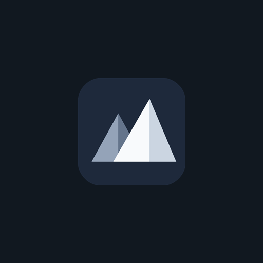
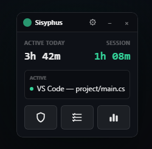
Desktop app that intercepts impulsive game launches and shows a todo checklist
before the game can open, with categorized activity analytics, AI-generated
feedback, and smart reminders built in.
Reached 50+ users in the first week of release.Learn More...
Ajou Course Manager
Medical school course administration
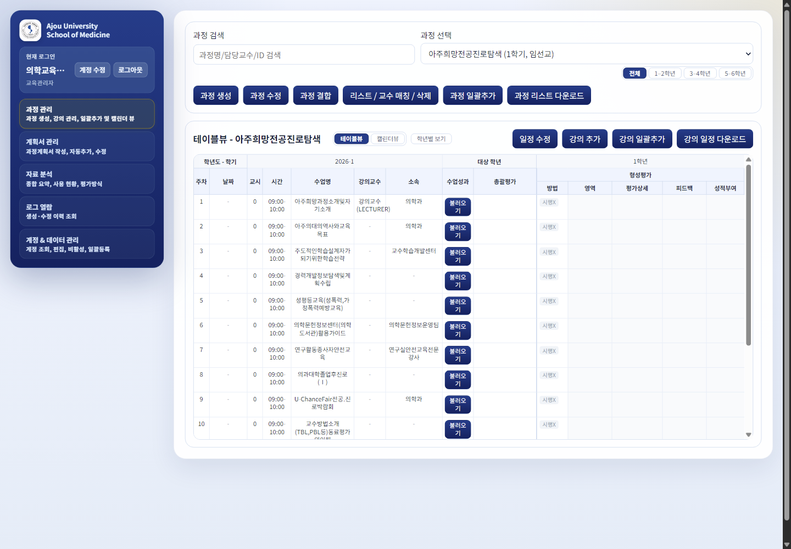
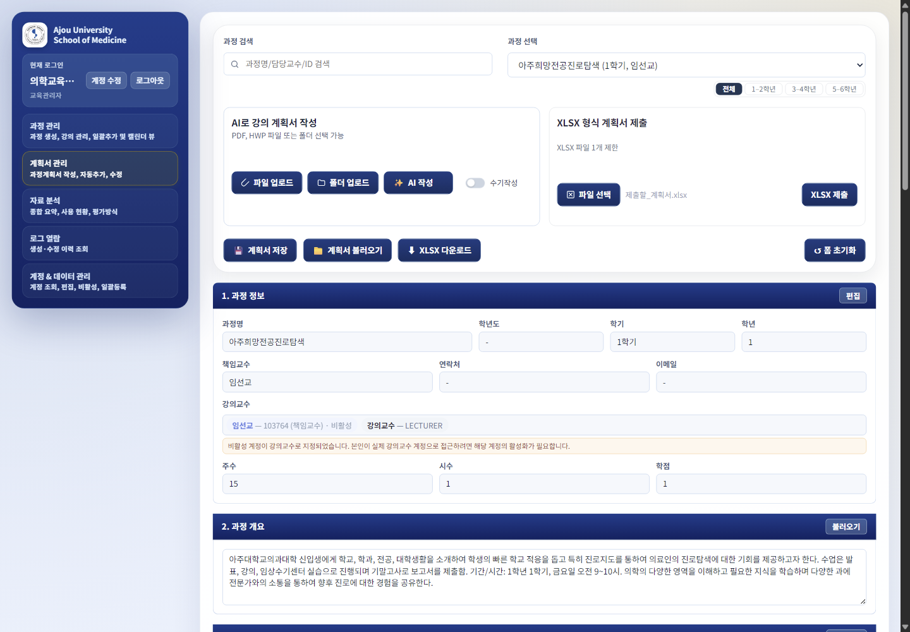
Production-oriented system for managing professors, courses, course plans, lectures,
reports, permissions, analytics, audit logs, XLSX workflows, and AI document parsing.
Learn More...
Alpaca Trading Bot
Alpaca paper trading automation
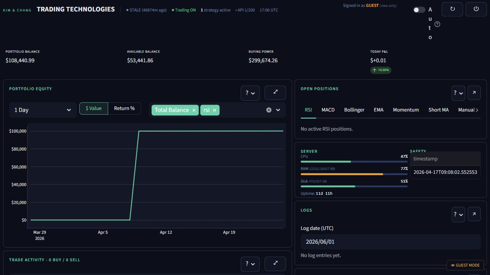
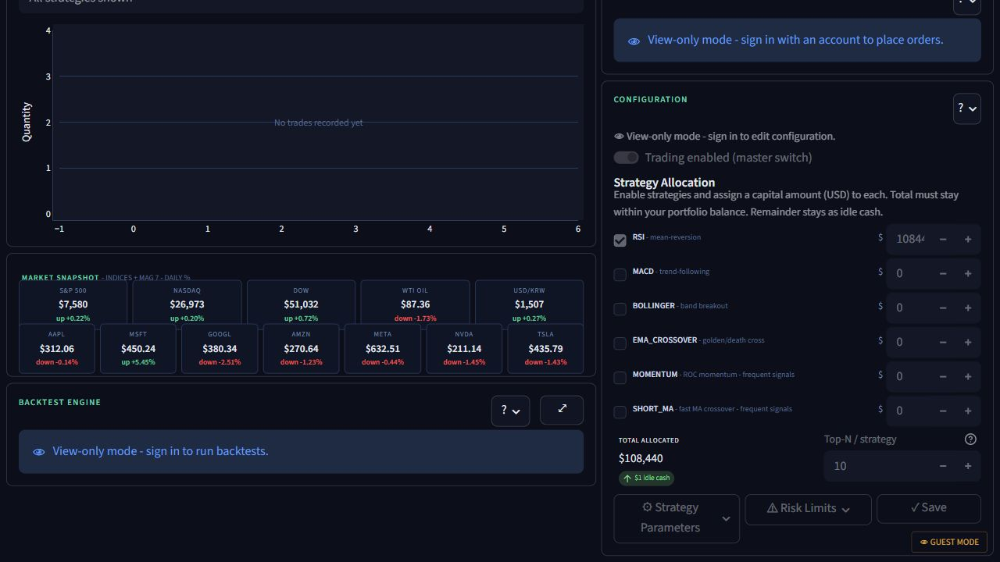
Paper-only Alpaca trading bot running 24/7 on a VPS with portfolio metrics,
multi-strategy allocation, backtesting, live logs, and kill-switch controls.
Learn More...
Hearty
AI concierge MVP for active seniors
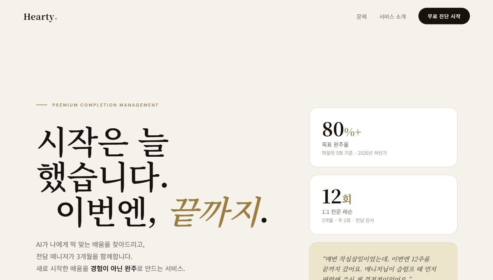
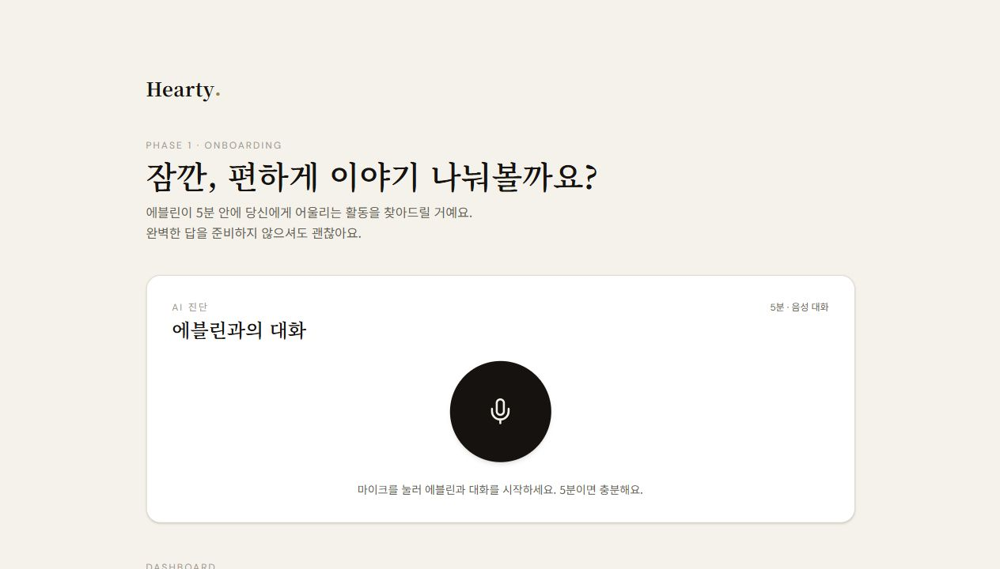
Deployed web MVP for guided activity completion, AI concierge onboarding,
sample login, activity records, messages, notifications, and OAuth groundwork.
Learn More...
Medical AI Application Research
Clinical NLP for psychiatry records and medication perception
AIMED
LLMs, clinical records, and public health text
Co-authored two SCI-level papers applying AI to psychiatric records and
antidepressant-related social media data.
Learn More...
Differentiating Experiences
KATUSA Service Try Me!
56M, 8A 2ID DSB UMT
Combined Forces service, tactical translation, and religious-support operations inside a U.S.-ROK Army environment.
LooxidLabs Internship Try Me!
Project Intern · Product Analytics
Paid internship during high school at a CES-winning VR startup, turning data from 200+ alpha testers into product, branding, and patent strategy.
Double Major
UT Austin CS & ECE
One of roughly four students in my class pursuing both CS and ECE, balancing software, systems, circuits, and math-heavy engineering work.
Korea and America
Two cultures
Spent 11 years in Korea and 10 in America, learning how to adapt across language, school systems, and culture.
I am completing my mandatory Korean military service as a KATUSA, serving as a
56M chaplain assistant in the 8th Army, 2nd Infantry Division Sustainment Brigade
Unit Ministry Team. The role placed me inside a U.S.-ROK Combined Forces
environment, where Korean and American soldiers plan, train, and operate together.
Working in that setting taught me to communicate with precision across rank,
language, and culture, especially when translating tactical context during combined
training.
During bootcamp, I earned Commandant's List by ranking top 4 out of 160 soldiers
in my graduating class. I later received both the Army Achievement Medal and the
Army Commendation Medal from Major General Lombardo for tactical translation
services that helped bridge Korean and U.S. personnel during field operations.
I also had opportunities to work with UNC and meet the Secretary of War and USFK
General Brunson, which made the scale and purpose of combined service feel much
more real and inspiring.
ARCOM and AAM awarded by MG Lombardo
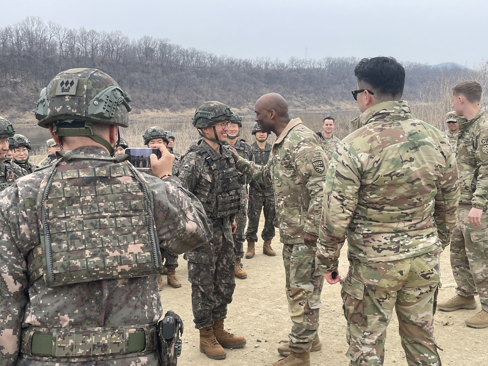
First-ever combined wet gap crossing with GEN Brunson
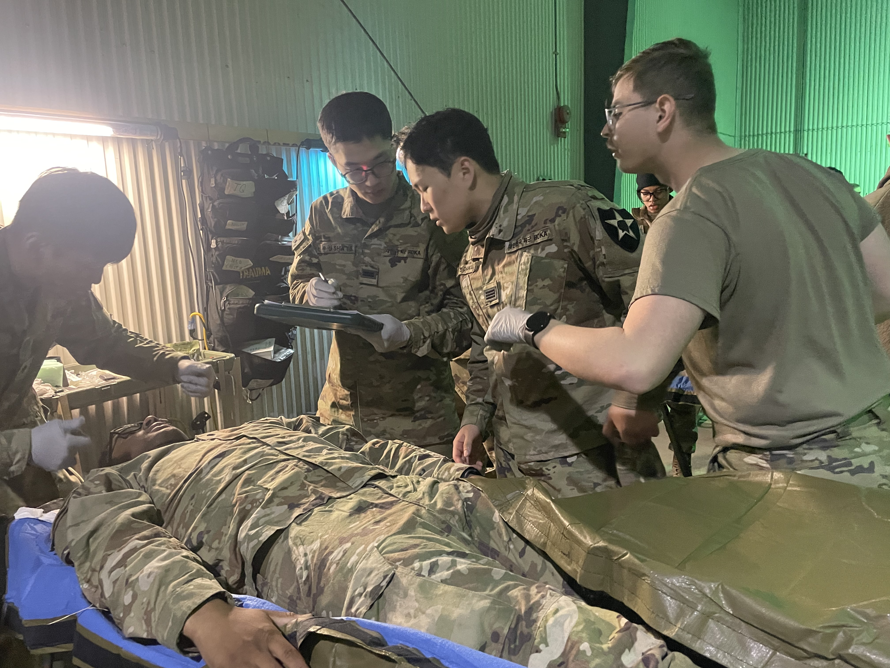
Mass casualty care training with 65 MED BrigadeCombined training environment
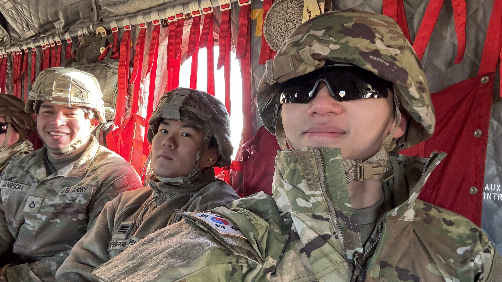
Combined Noncombatant Evacuation Operation
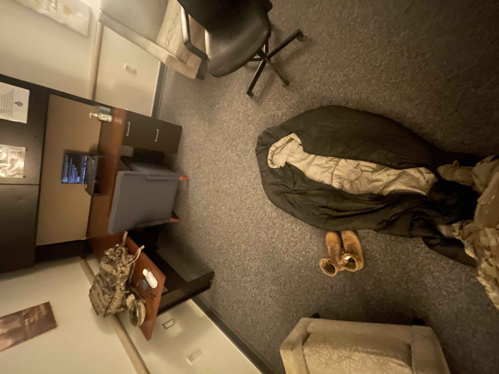
Balancing service with project work after duty
At UT Austin, I am studying CS & ECE as one of roughly four students in my graduating
class pursuing both Computer Science and Electrical and Computer Engineering. The
path exposed me to two demanding ways of thinking: software abstraction, algorithms,
and systems on one side, and circuits, hardware constraints, and math-heavy
engineering on the other.
Accepting that workload also opened doors to competitive student organizations and
department-level opportunities. Through
Texas Convergent,
I built an NFC sleep alarm and pitched it to more than 200 students in the
organization, which pushed me to think about engineering as both a technical build
and a product story. I also had the
chance to interview faculty applicants to the ECE department, giving me a rare look
at how a top engineering department evaluates future professors and research
directions.
On the research side, I led paper discussions with two PhD students through
DiRP,
UT Austin's Directed Reading Program for computer science. Those discussions made
research feel more active and conversational: not just reading a paper, but asking
what assumptions it makes, where the method breaks, and how the idea could turn
into something buildable.
Taking both majors has often meant carrying a workload beyond what felt comfortable.
Over time, that became useful training. It taught me how to break large technical
problems into pieces, keep moving when the schedule is tight, and build projects
that respect both product behavior and engineering limits.
I spent 11 years in Korea and 10 years in America. When I was 10, I moved to
Oklahoma with my mother and entered public school before I could speak English.
That experience was uncomfortable, but it became the first real proof that I could
rebuild myself in a new environment by observing carefully, asking for help, and
improving a little every day.
After three years in Oklahoma, I returned to Korean middle school and experienced
the typical Korean academic system: repetition, memorization, long hours, and
constant comparison against peers. I learned discipline from it, but I also realized
that simply competing inside a fixed track was not the way I wanted to grow.
I then spent a year as an exchange student in Missouri. COVID-19 broke out during
that period, so the normal exchange-student experience disappeared almost overnight.
Instead of treating the year as lost time, I tried to get something meaningful out
of it by helping create virtual activities that local students could still join and
use to stay connected.
Later, when I decided that I wanted to attend college in the United States, I applied
to The Stony Brook School in New York. Living there gave me a broader view of the
U.S. beyond the Midwest, and being near Renaissance Technologies sparked my early
curiosity about quantitative finance: the idea that mathematics, computing, and
markets could intersect. I see myself as a true combination of Korean and American
cultures, shaped by both systems rather than only one.
During my high school years, I worked as a paid Project Intern on the Product
Analytics team at
LooxidLabs,
a CES Innovation Award-winning startup building VR and brain-computer-interface
technology. At the time the team was launching CarePlay, billed as the first
metaverse platform for mental wellbeing. Being inside an early-stage hardware
startup as a high schooler gave me my first real look at how a product moves from
prototype toward market.
My core work was analyzing data from 200+ alpha testers for the VR mental-health
device and translating their feedback into concrete recommendations across product
validation, branding, business strategy, and patent development. I also supported
the CarePlay launch event in New York, where we ran structured testing sessions and
watched real users react to something we had only seen as rows in a spreadsheet.
That experience taught me to treat user data as a story about people rather than
just numbers, and to connect that story back to the decisions a company actually
has to make.
CarePlay — a metaverse platform for mental wellbeingWorking alongside the team during the alpha test cycleCarePlay launch event in New YorkAnalyzing tester data and product feedbackRunning sessions with 200+ alpha testersDaily standup and product validation work